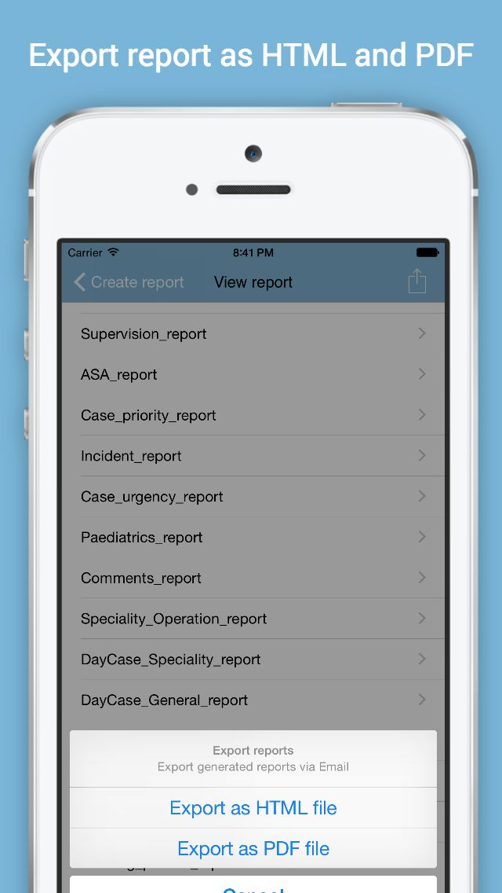

Log4AS
Log4AS is a simple logbook for professional anaesthetists, which provides an intuitive user interface and key word suggestion for fast record entry.



Log4AS is a simple logbook, which provides an intuitive user interface and key word suggestion for fast record entry. It can capture all the required information in an operation and is helpful for professional anaesthetists worldwide. ★ Intuitive data entry, view, and search ★ Completed report/summary generation ★ Easy import from other systems ★ Easy local and online backup
© 2012-2015 M-PAX group